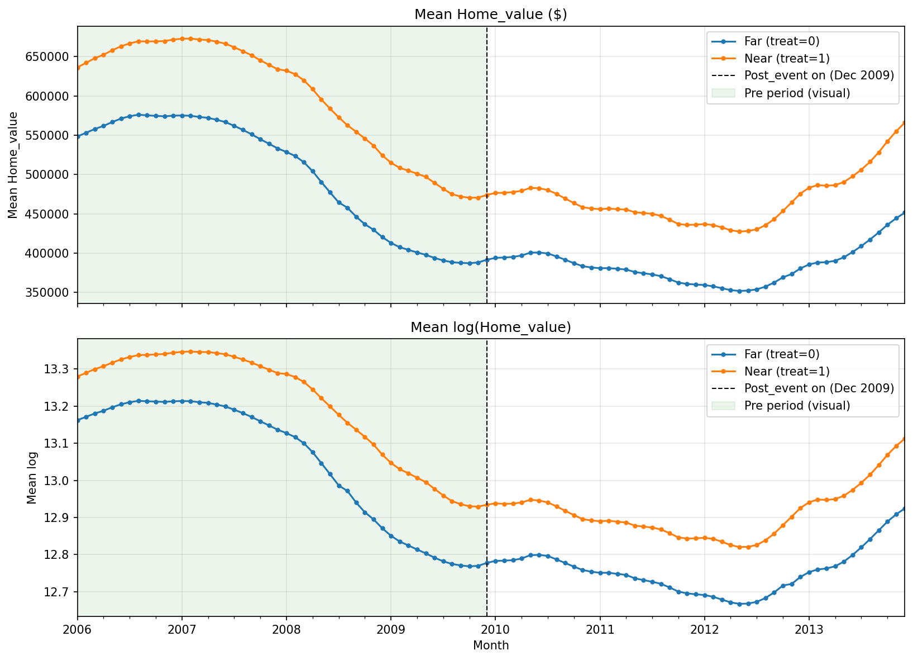

Group Project · Causal Inference
Did a New Metro Line Change Nearby Home Values?
Did the December 2009 approval of the Crenshaw/LAX (K Line) rail project affect home values in nearby Los Angeles neighborhoods? I worked on this project with a group of two other students.
Python · Difference-in-Differences · Fixed-effects regression · Zillow & LA Metro data · GBA 6230 Advanced Statistics, Spring 2026
Approach
We built a monthly dataset of Zillow home values for 170 Los Angeles County ZIP codes from 2006 to 2013 (16,211 ZIP-month observations) and measured each ZIP code's distance to the nearest future K Line station. ZIP codes within 6 miles became the "near" group and ZIP codes 15+ miles away became the "far" group, with the in-between areas left out to keep the comparison clean.
Using a difference-in-differences model with ZIP and month fixed effects, we compared how home values changed in near vs. far ZIP codes after the approval. We then stress-tested the results with placebo dates, a placebo rail line (the Metro B Line), different distance cutoffs, and a formal pre-trend test.
Key results

- In dollar terms, near ZIP codes grew less. After the approval, home values near the line grew about $15,700 less than in far ZIP codes, a statistically significant result (p = 0.007).
- In percentage terms, there was no clear effect. Measured as percent change, the difference was only −0.6% and not statistically significant (p = 0.78).
- The checks gave mixed signals. Placebo dates and the placebo rail line showed no false effects, which supports the design. However, the formal test found that the two groups were already trending differently before 2009.
Summary
We found no consistent evidence that the K Line approval changed nearby home values. The dollar-based model suggested slower growth near the line, but the percentage-based model did not, and pre-existing differences between the two groups mean the results should be read as suggestive rather than definitive.
The project showed that the effects of transit investments on housing may be more complex than "new rail raises nearby prices," especially at the approval stage, before construction begins. It also demonstrated the value of testing a model's assumptions and reporting uncertainty honestly instead of relying on a simple before-and-after comparison.